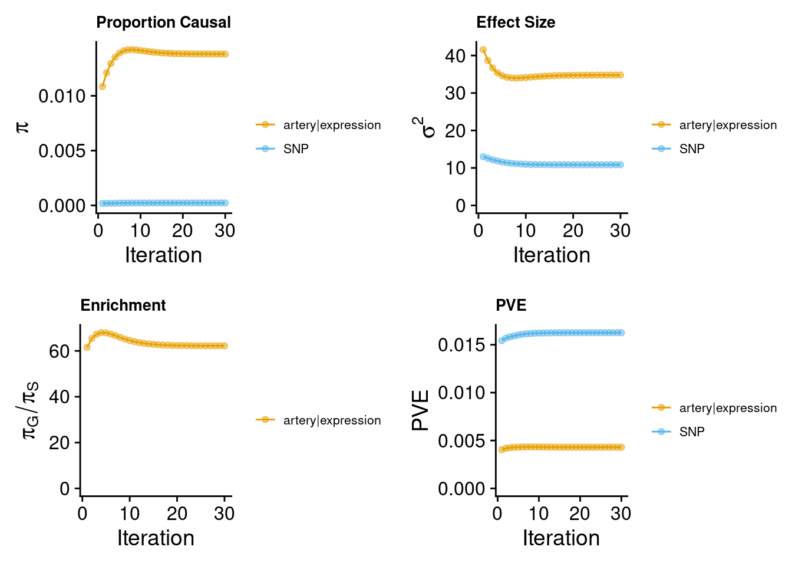
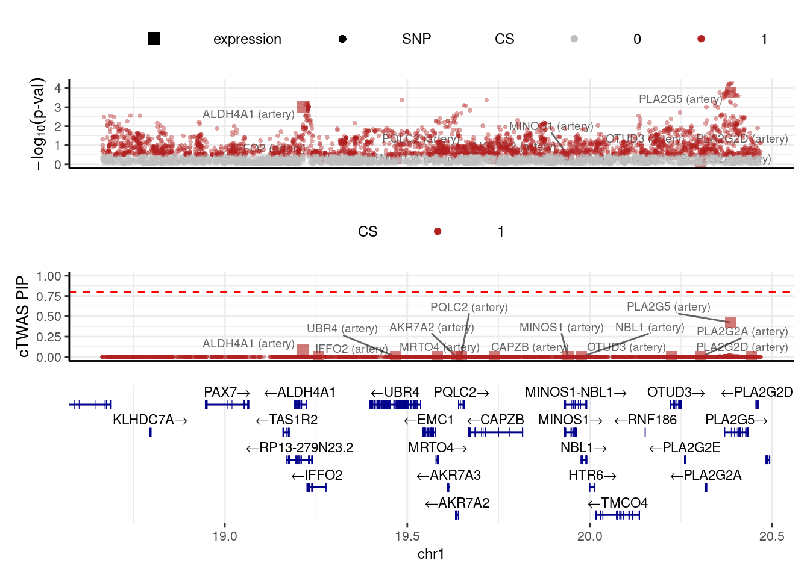

Last updated: 2024-10-04
Checks: 7 0
Knit directory: CAD_cTWAS/
This reproducible R Markdown analysis was created with workflowr (version 1.7.1). The Checks tab describes the reproducibility checks that were applied when the results were created. The Past versions tab lists the development history.
Great! Since the R Markdown file has been committed to the Git repository, you know the exact version of the code that produced these results.
Great job! The global environment was empty. Objects defined in the global environment can affect the analysis in your R Markdown file in unknown ways. For reproduciblity it’s best to always run the code in an empty environment.
The command set.seed(20241004) was run prior to running the code in the R Markdown file. Setting a seed ensures that any results that rely on randomness, e.g. subsampling or permutations, are reproducible.
Great job! Recording the operating system, R version, and package versions is critical for reproducibility.
Nice! There were no cached chunks for this analysis, so you can be confident that you successfully produced the results during this run.
Great job! Using relative paths to the files within your workflowr project makes it easier to run your code on other machines.
Great! You are using Git for version control. Tracking code development and connecting the code version to the results is critical for reproducibility.
The results in this page were generated with repository version 7eab91e. See the Past versions tab to see a history of the changes made to the R Markdown and HTML files.
Note that you need to be careful to ensure that all relevant files for the analysis have been committed to Git prior to generating the results (you can use wflow_publish or wflow_git_commit). workflowr only checks the R Markdown file, but you know if there are other scripts or data files that it depends on. Below is the status of the Git repository when the results were generated:
Untracked files:
Untracked: ctwas_res_noLD.RData
Untracked: res.RData
Note that any generated files, e.g. HTML, png, CSS, etc., are not included in this status report because it is ok for generated content to have uncommitted changes.
These are the previous versions of the repository in which changes were made to the R Markdown (analysis/CAD_cTWAS_noLD.Rmd) and HTML (docs/CAD_cTWAS_noLD.html) files. If you’ve configured a remote Git repository (see ?wflow_git_remote), click on the hyperlinks in the table below to view the files as they were in that past version.
| File | Version | Author | Date | Message |
|---|---|---|---|---|
| Rmd | 7eab91e | Xizhi | 2024-10-04 | Add my first analysis |
Load the required packages.
### Set up
# setwd("xizhi_xin_midway3/cTWAS_2024")
library(data.table)
library(ctwas)
library(RSQLite)
library(EnsDb.Hsapiens.v75)
library(workflowr)The CAD summary statistics data I used was accessed from website: https://www.nature.com/articles/s41588-022-01233-6 . I filtered the original data to maintain the MAF between (0.01, 0.99).
gwas_data <- fread("GCST90132314_buildGRCh37.tsv", sep = "\t")
# Filter to remain the variants with MAF (0.01, 0.99)
gwas_filter <- gwas_data[gwas_data$effect_allele_frequency > 0.01, ]
gwas_filter <- gwas_filter[gwas_filter$effect_allele_frequency < 0.99, ]
gwas_filter$z <- gwas_filter$beta / gwas_filter$standard_error
gwas_map <- gwas_filter[, c("chromosome", "base_pair_location", "z")]Here I got the region info from the package cTWAS. SNP info was also accessed from reference panel of cTWAS website. Another thing to notice: genome build needs to be matched.
# Region info
region_file <- system.file("extdata/ldetect", "EUR.b37.ldetect.regions.RDS", package = "ctwas")
region_info <- readRDS(region_file)
# SNP info
ref_snp_info <- fread("ukb_b37_0.1_var_info.Rvar", sep = "\t") # 9324048
class(ref_snp_info) <- "data.frame"
res <- create_snp_map(region_info, ref_snp_info, ncore = 6)
region_info <- res$region_info
snp_map <- res$snp_map
head(region_info)
ref_data <- read.table("ukb_b37_0.1_var_info.Rvar", header = TRUE, sep = "\t")
colnames(gwas_map)[colnames(gwas_map) == "base_pair_location"] <- "pos"
colnames(gwas_map)[colnames(gwas_map) == "chromosome"] <- "chrom"
head(gwas_map)
# Harmonize GWAS summary statistics.
z_snp <- merge(gwas_map, ref_data, by = c("pos", "chrom")) # 9155485
z_snp <- z_snp[, c("id", "alt", "ref", "z")]
colnames(z_snp)[colnames(z_snp) == "alt"] <- "A1"
colnames(z_snp)[colnames(z_snp) == "ref"] <- "A2"
head(z_snp)
z_snp <- preprocess_z_snp(z_snp, snp_map)The prediction model was accessed from GTEx: mashr_eqtl. Here, I used artery aorta as example.
artery_file <- "mashr_eqtl/eqtl/mashr/mashr_Artery_Aorta.db"
artery <- preprocess_weights(artery_file,
region_info,
z_snp$id,
snp_map,
type = "expression",
context = "artery",
ncore = 6)After all the input files ready, run the cTWAS.
# # ctwas_res <- ctwas_sumstats_noLD(z_snp,
# artery,
# region_info,
# snp_map,
# thin = 0.1,
# ncore = 6)
load("ctwas_res_noLD.RData")
z_gene <- ctwas_res$z_gene
param <- ctwas_res$param
finemap_res <- ctwas_res$finemap_res
boundary_genes <- ctwas_res$boundary_genes
region_data <- ctwas_res$region_data
screen_res <- ctwas_res$screen_resCreate the convergence plots:
gwas_n <- 1165690
make_convergence_plots(param, gwas_n)
Estimate the parameters:
ctwas_parameters <- summarize_param(param, gwas_n)
ctwas_parameters$group_size
artery|expression SNP
10447 7864770
$group_prior
artery|expression SNP
0.013811188 0.000221933
$group_prior_var
artery|expression SNP
34.77007 10.85988
$enrichment
[1] 62.23135
$group_pve
artery|expression SNP
0.004303731 0.016261100
$total_pve
[1] 0.02056483
$attributable_pve
artery|expression SNP
0.2092762 0.7907238 finemap_res$molecular_id <- get_molecular_ids(finemap_res)Add p-values to finemapping results:
finemap_res$pval <- z2p(finemap_res$z)
head(finemap_res) id type context group
1 ENSG00000159423.16|artery_expression expression artery artery|expression
2 ENSG00000169991.10|artery_expression expression artery artery|expression
3 ENSG00000127481.14|artery_expression expression artery artery|expression
4 ENSG00000053372.4|artery_expression expression artery artery|expression
5 ENSG00000053371.12|artery_expression expression artery artery|expression
6 ENSG00000040487.12|artery_expression expression artery artery|expression
region_id z susie_pip mu2 cs_index
1 1_18662899_20469149 3.2951395 0.0857924530 11.231377 1
2 1_18662899_20469149 -0.8490555 0.0006219497 1.653195 1
3 1_18662899_20469149 0.7283226 0.0005669667 1.473253 1
4 1_18662899_20469149 0.8308470 0.0006127718 1.624293 1
5 1_18662899_20469149 1.0876908 0.0007785918 2.089891 1
6 1_18662899_20469149 -1.3404172 0.0010491470 2.669707 1
molecular_id pval
1 ENSG00000159423.16 0.0009837284
2 ENSG00000169991.10 0.3958503982
3 ENSG00000127481.14 0.4664161138
4 ENSG00000053372.4 0.4060600775
5 ENSG00000053371.12 0.2767316118
6 ENSG00000040487.12 0.1801097504View the results: mol traits, PIP > 0.8
finemap_sig <- subset(finemap_res, group != "SNP" & susie_pip > 0.8 & cs_index != 0) # 20 sig genes, 4 sig SNPsCompute gene PIPs:
combined_pip_by_context <- combine_gene_pips(finemap_res,
group_by = "molecular_id",
by = "context",
method = "sum",
filter_cs = TRUE)2024-10-04 17:03:56 INFO::Limit gene results to credible setscombined_pip_by_context_sig <- subset(combined_pip_by_context, combined_pip > 0.8)
DT::datatable(combined_pip_by_context_sig,caption = htmltools::tags$caption( style = 'caption-side: topleft; text-align = left; color:black;','Significant genes'),options = list(pageLength = 10) )Add gene annotations:(make sure the genome build match)
ens_db <- EnsDb.Hsapiens.v75
finemap_gene_res <- subset(finemap_res, group != "SNP")
gene_ids <- unique(finemap_gene_res$molecular_id)
gene_annot <- get_gene_annot_from_ens_db(ens_db, gene_ids)2024-10-04 17:03:56 INFO::Remove 16 gene_ids not found in ens_db.colnames(gene_annot)[colnames(gene_annot) == "gene_id"] <- "molecular_id"
head(gene_annot) molecular_id gene_name gene_type chrom start end
1 ENSG00000159423.16 ALDH4A1 protein_coding 1 19197926 19229275
2 ENSG00000169991.10 IFFO2 protein_coding 1 19230775 19283180
3 ENSG00000127481.14 UBR4 protein_coding 1 19401000 19536770
4 ENSG00000053372.4 MRTO4 protein_coding 1 19578033 19586622
5 ENSG00000053371.12 AKR7A2 protein_coding 1 19630459 19638640
6 ENSG00000040487.12 PQLC2 protein_coding 1 19638820 19655794load("res.RData")
snp_map <- res$snp_map
# Update finemap results with gene annot
finemap_res <- anno_finemap_res(finemap_res,
snp_map = snp_map,
mapping_table = gene_annot,
add_gene_annot = TRUE,
map_by = "molecular_id",
drop_unmapped = TRUE,
add_position = TRUE,
use_gene_pos = "mid")2024-10-04 17:04:26 INFO::Annotating fine-mapping result ...
2024-10-04 17:04:26 INFO::Map molecular traits to genes
2024-10-04 17:04:26 INFO::Drop 16 unmapped molecular IDs
2024-10-04 17:04:27 INFO::Add gene positions
2024-10-04 17:04:27 INFO::Add SNP positionsfinemap_res_sig <- subset(finemap_res, group != "SNP" & gene_type == "protein_coding" & susie_pip > 0.8 & cs_index != 0)
DT::datatable(finemap_res_sig,caption = htmltools::tags$caption( style = 'caption-side: topleft; text-align = left; color:black;','Significant protein-coding genes'),options = list(pageLength = 10) )combined_pip_by_type <- combine_gene_pips(finemap_res,
group_by = "gene_name",
by = "type",
method = "combine_cs",
filter_cs = TRUE)2024-10-04 17:04:38 INFO::Limit gene results to credible setssubset(combined_pip_by_type, combined_pip > 0.8) gene_name expression_pip combined_pip
1 PHACTR1 1.0000000 1.0000000
2 TCF21 0.9944340 0.9944340
3 FES 0.9943749 0.9943749
4 PTK7 0.9886410 0.9886410
5 LIPA 0.9852857 0.9852857
6 SAP130 0.9757377 0.9757377
7 MRAS 0.9740157 0.9740157
8 GSTT2B 0.9731691 0.9731691
9 CETP 0.9655732 0.9655732
10 CCDC97 0.9465746 0.9465746
11 EIF2B2 0.9375295 0.9375295
12 NRP2 0.9272332 0.9272332
13 ARVCF 0.9136817 0.9136817
14 CORO6 0.8703933 0.8703933
15 FHL3 0.8588665 0.8588665
16 DBN1 0.8184333 0.8184333
17 RNF38 0.8118367 0.8118367
18 ZNF524 0.8020104 0.8020104
19 FOXK2 0.8017272 0.8017272make_locusplot(finemap_res,
region_id = "1_18662899_20469149",
ens_db = ens_db,
highlight_pip = 0.8,
filter_protein_coding_genes = TRUE,
filter_cs = TRUE,
color_pval_by = "cs",
color_pip_by = "cs")2024-10-04 17:04:38 INFO::Limit to protein coding genes
2024-10-04 17:04:38 INFO::focal id: ENSG00000127472.10|artery_expression
2024-10-04 17:04:38 INFO::focal molecular trait: PLA2G5 artery expression
2024-10-04 17:04:38 INFO::Range of locus: chr1:18664016-20469198chromosome 1, position 18664016 to 204691986204 SNPs/datapoints2024-10-04 17:04:38 INFO::Limit PIPs to credible sets
sessionInfo()R version 4.2.0 (2022-04-22)
Platform: x86_64-pc-linux-gnu (64-bit)
Running under: Red Hat Enterprise Linux 8.4 (Ootpa)
Matrix products: default
BLAS/LAPACK: /software/openblas-0.3.13-el8-x86_64/lib/libopenblas_skylakexp-r0.3.13.so
locale:
[1] LC_CTYPE=en_US.UTF-8 LC_NUMERIC=C
[3] LC_TIME=en_US.UTF-8 LC_COLLATE=en_US.UTF-8
[5] LC_MONETARY=en_US.UTF-8 LC_MESSAGES=en_US.UTF-8
[7] LC_PAPER=en_US.UTF-8 LC_NAME=C
[9] LC_ADDRESS=C LC_TELEPHONE=C
[11] LC_MEASUREMENT=en_US.UTF-8 LC_IDENTIFICATION=C
attached base packages:
[1] stats4 stats graphics grDevices utils datasets methods
[8] base
other attached packages:
[1] EnsDb.Hsapiens.v75_2.99.0 ensembldb_2.22.0
[3] AnnotationFilter_1.22.0 GenomicFeatures_1.50.4
[5] AnnotationDbi_1.60.2 Biobase_2.58.0
[7] GenomicRanges_1.50.2 GenomeInfoDb_1.34.9
[9] IRanges_2.32.0 S4Vectors_0.36.2
[11] BiocGenerics_0.44.0 RSQLite_2.3.1
[13] ctwas_0.4.13 data.table_1.14.8
[15] workflowr_1.7.1
loaded via a namespace (and not attached):
[1] colorspace_2.1-0 rjson_0.2.21
[3] ellipsis_0.3.2 rprojroot_2.0.3
[5] XVector_0.38.0 locuszoomr_0.3.5
[7] fs_1.5.2 rstudioapi_0.14
[9] farver_2.1.1 DT_0.22
[11] ggrepel_0.9.3 bit64_4.0.5
[13] fansi_1.0.4 xml2_1.3.3
[15] codetools_0.2-18 logging_0.10-108
[17] cachem_1.0.8 knitr_1.42
[19] jsonlite_1.8.7 Rsamtools_2.14.0
[21] dbplyr_2.3.2 png_0.1-7
[23] readr_2.1.4 compiler_4.2.0
[25] httr_1.4.7 Matrix_1.6-4
[27] fastmap_1.1.1 lazyeval_0.2.2
[29] cli_3.6.2 later_1.3.0
[31] htmltools_0.5.7 prettyunits_1.1.1
[33] tools_4.2.0 gtable_0.3.4
[35] glue_1.6.2 GenomeInfoDbData_1.2.9
[37] dplyr_1.1.3 rappdirs_0.3.3
[39] Rcpp_1.0.11 jquerylib_0.1.4
[41] vctrs_0.6.3 Biostrings_2.66.0
[43] rtracklayer_1.58.0 crosstalk_1.2.0
[45] xfun_0.40 stringr_1.5.0
[47] ps_1.7.0 lifecycle_1.0.4
[49] irlba_2.3.5 restfulr_0.0.15
[51] XML_3.99-0.9 getPass_0.2-2
[53] zlibbioc_1.44.0 zoo_1.8-11
[55] scales_1.2.1 gggrid_0.2-0
[57] hms_1.1.3 promises_1.2.0.1
[59] MatrixGenerics_1.10.0 ProtGenerics_1.30.0
[61] parallel_4.2.0 SummarizedExperiment_1.28.0
[63] LDlinkR_1.3.0 yaml_2.3.7
[65] curl_4.3.2 memoise_2.0.1
[67] ggplot2_3.4.3 sass_0.4.1
[69] biomaRt_2.54.1 stringi_1.7.12
[71] highr_0.9 BiocIO_1.8.0
[73] filelock_1.0.2 BiocParallel_1.32.6
[75] rlang_1.1.1 pkgconfig_2.0.3
[77] matrixStats_1.2.0 bitops_1.0-7
[79] evaluate_0.15 lattice_0.20-45
[81] purrr_1.0.2 labeling_0.4.3
[83] GenomicAlignments_1.34.1 htmlwidgets_1.6.2
[85] cowplot_1.1.1 bit_4.0.5
[87] processx_3.5.3 tidyselect_1.2.0
[89] magrittr_2.0.3 R6_2.5.1
[91] generics_0.1.3 DelayedArray_0.24.0
[93] DBI_1.1.3 withr_2.5.0
[95] pgenlibr_0.3.6 pillar_1.9.0
[97] whisker_0.4 KEGGREST_1.38.0
[99] RCurl_1.98-1.12 mixsqp_0.3-54
[101] tibble_3.2.1 crayon_1.5.2
[103] utf8_1.2.3 BiocFileCache_2.6.1
[105] plotly_4.10.0 tzdb_0.4.0
[107] rmarkdown_2.21 progress_1.2.2
[109] grid_4.2.0 blob_1.2.4
[111] callr_3.7.0 git2r_0.30.1
[113] digest_0.6.33 tidyr_1.3.0
[115] httpuv_1.6.5 munsell_0.5.0
[117] viridisLite_0.4.2 bslib_0.3.1